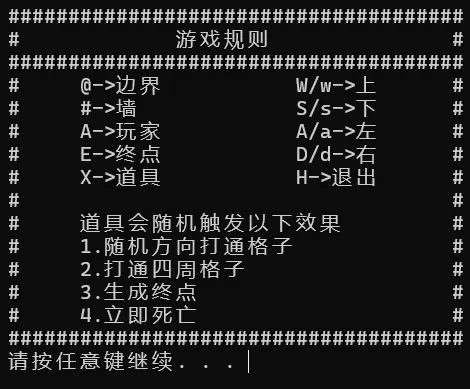
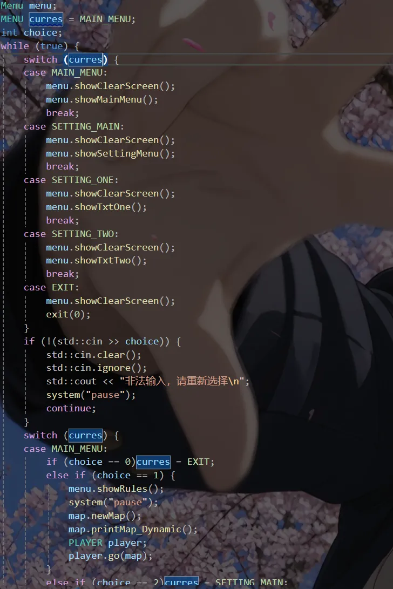
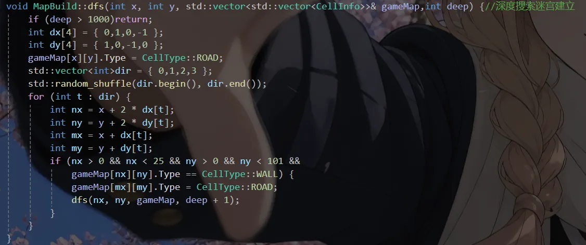
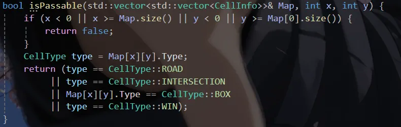
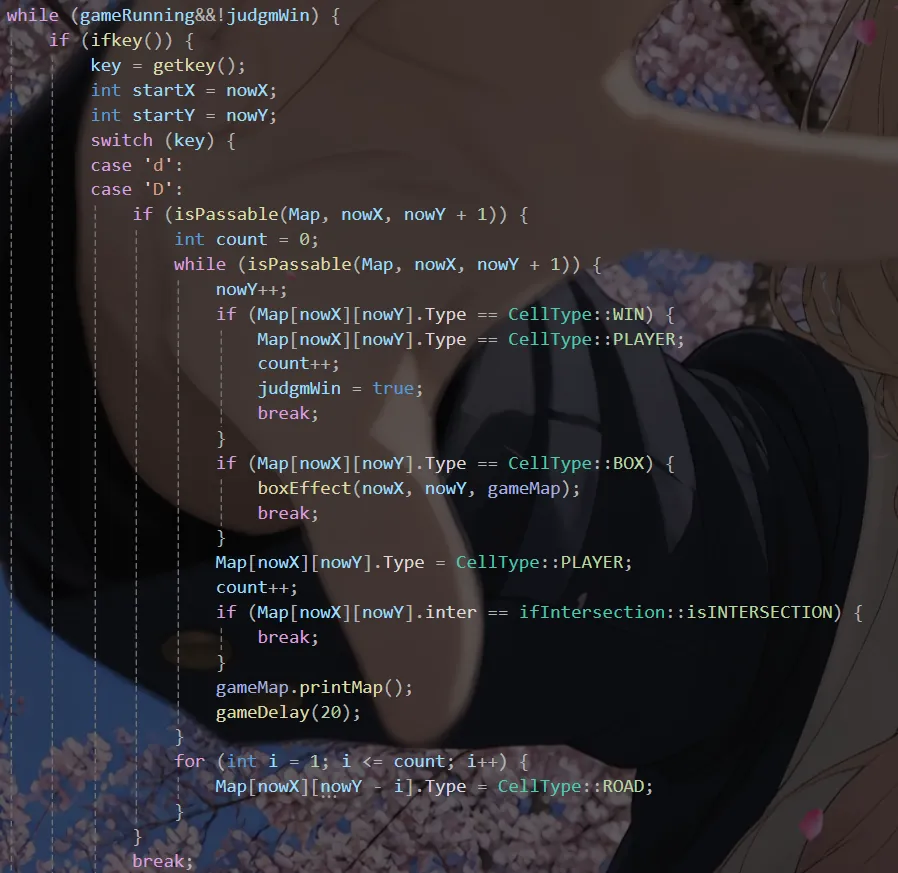
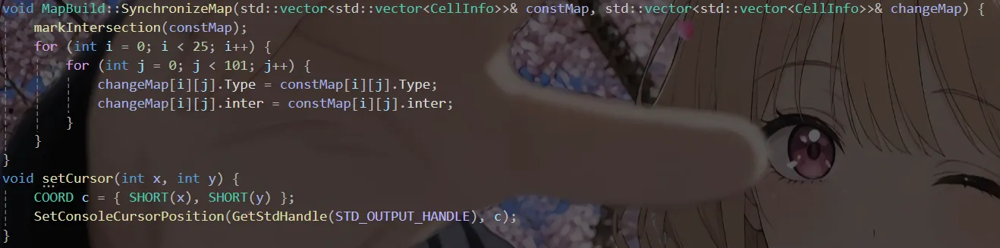

Case 02 / 08
迷宫
为了把编码能力再往上推一档而做的项目。核心是用 DFS 递归生成迷宫，之后前后迭代了三个版本， 也是在这里第一次碰上「键盘响应」和「刷新闪烁」这类真实问题。
概览与技术栈
扫雷做完之后想巩固一下自己的知识，于是有了这个迷宫。地图不再是静态摆好的格子，而是每次开局都用 DFS 递归回溯现场挖出来：从一个起点出发，把方向数组打乱，沿着没走过的方向 一次跳两格挖通路，撞到底就回溯。这样每局的地图都不一样，也顺带把递归和回溯真正写了一遍。
缺点是地图尺寸被写死了——25 行 × 101 列，连同所有边界判定都绕不开这两个数字，改一次尺寸要 连着改好几处，但这是已知的最大地图了，因为dfs开销比较大，地图再大就会炸掉。这个项目的边界检查也写得格外啰嗦，每次移动前都要确认目标格不越界、并且是 可通行的类型，因为越界一次就会直接崩掉。
因为地图是实时重绘的，两个体验问题在这个项目里变得很突出，也是我花时间最多的地方：一是原来
用 cin 读输入，必须按回车才生效，走一步顿一下，后来换成了无阻塞读取键盘；二是
25 × 101 的地图整屏清空再重印会闪得很厉害，于是改成了前后双端打印，只重画变化的部分。
版本迭代
这个项目前后升了三个版本，每一版都是被「玩起来不舒服」逼出来的：
v2.0 —— 由于版本v1.0单纯走迷宫太无聊，于是把终点从固定位置改成随机分布在地图右半区，
并给终点加了一个固定房间；地图上加入道具 X，碰到会触发随机效果；首次打开
地图时不再一次性铺满，而是动态生成，帮玩家快速定位起点、终点和道具的位置。
v3.0 —— 针对 25 × 101 地图整屏重印的强烈闪烁，改用前后双端打印；同时在
MapBuild 类里加了 mazeOptimization 方法，对 DFS 生成的迷宫做二次优化，把
规整的走廊打散一些，路径走向更多元。
技术栈
- 语言
- C++
- 生成算法
- DFS 递归回溯，按步长 2 挖路后打通中间格
- 输入
- 无阻塞读取按键
- 渲染
- 前后双端打印
- 地图规模
- 25 行 × 101 列
- 工具
- Visual Studio 2022
截图与演示
先看规则页，再看一段实际走迷宫的录屏。视频默认不加载也不自动播放，需要点击左下角的播放按钮 才会开始下载。

A 是玩家、E 是终点、X
是道具，移动时不会整屏闪一下，这就是前后双端打印的效果。玩家会一直移动直到走到了下一个路口停下。
技术文档
代码量比扫雷大了不少，下面挑了五处关键实现：主循环的状态机、DFS 生成迷宫、通行判定、 移动与道具触发、以及双端打印的同步和光标定位。完整实现放在github里。
现在回看，这个项目最大的教训是「要仔细做边界判定」。因为地图是动态的，玩家在移动，不同的效果盒子也会对地图做出改变，稍不注意就会报错。

curres 表示当前处在哪个界面，while 里按状态
分发；std::cin >> choice 失败时会清空缓冲、提示重新输入，而不是直接退出。

random_shuffle 打乱，再沿着每个方向跳两格试探；挖通
通路时把中间那一格也设成通路，迷宫才不会只剩一格宽的死胡同。越界判断写在这一层。


_kbhit() 先问有没有按键，有才用 getkey() 读走，
所以不用按回车。按住方向时会在 while 里连续推进，遇到终点、道具 X
或岔路才停下——boxEffect 就是在这里被触发的。

SynchronizeMap 把新地图逐格同步回参照地图，
setCursor 调 Windows API 把光标直接定位到某个坐标。有了这两件事，重绘
就不必整屏清空再打印，闪烁随之消失。